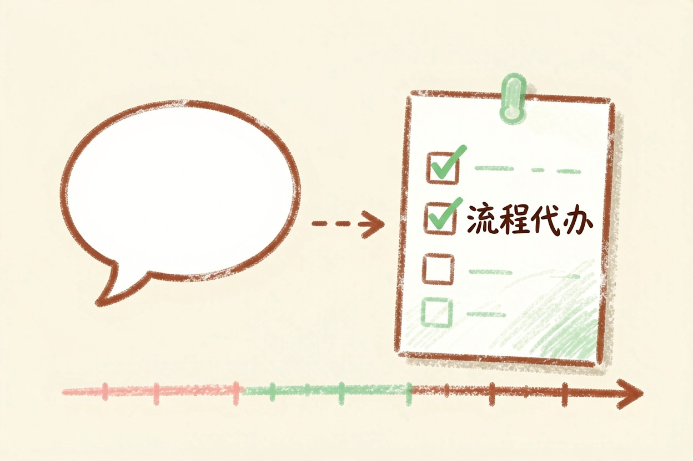
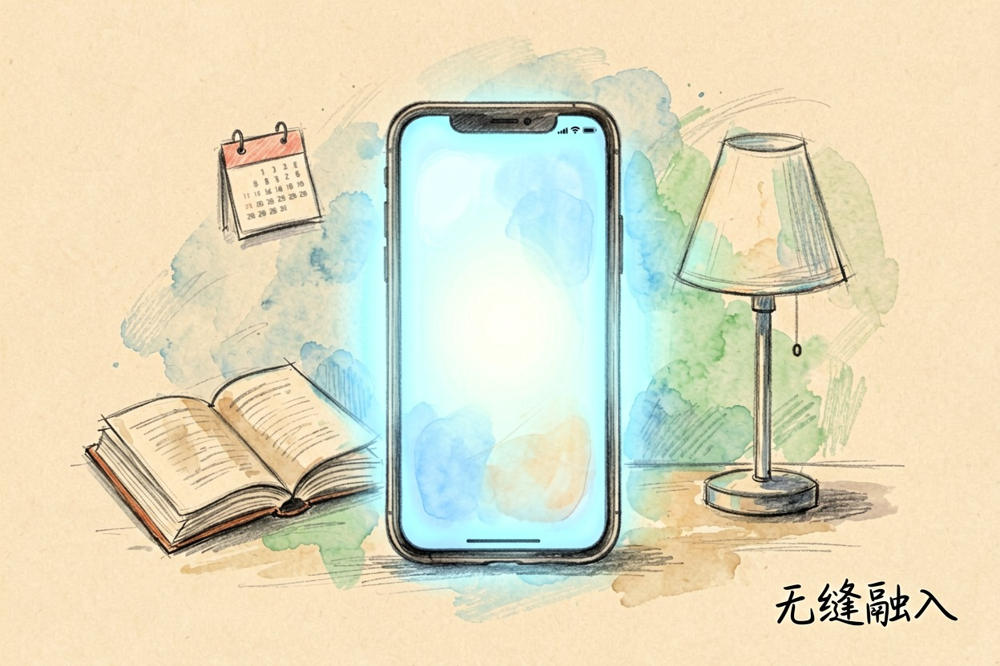
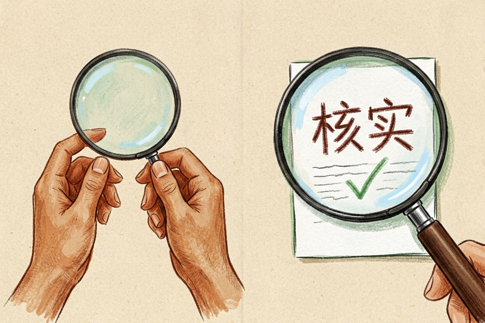
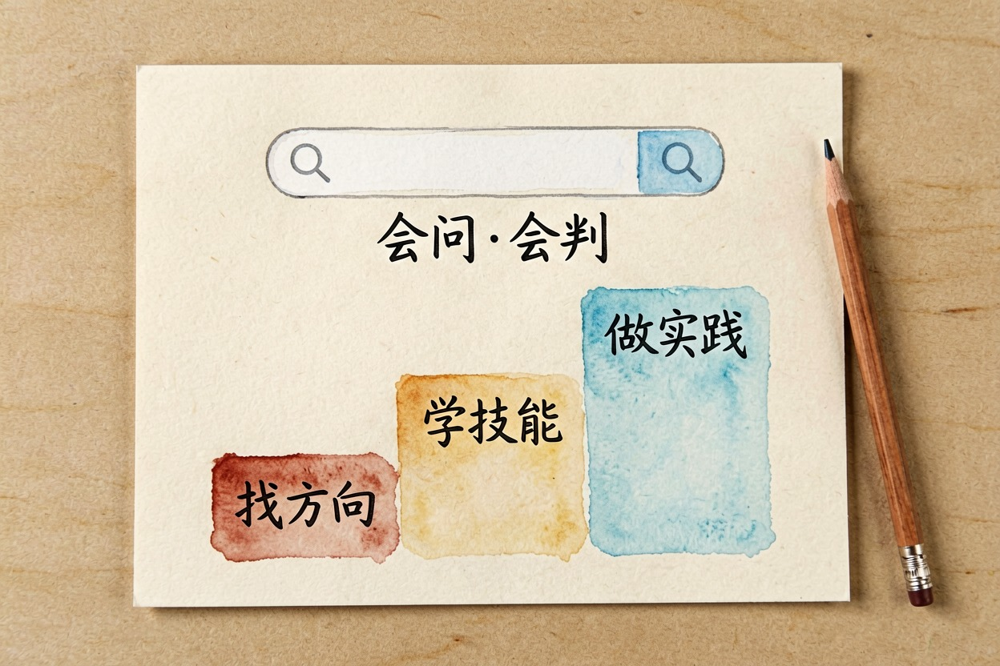
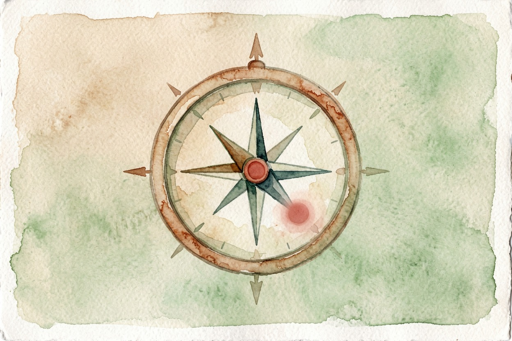

2026 年 AI 趋势：普通人能感知的 5 个
今年 AI 不再停留在概念，而是落到日常：普通人能感知的变化有五个方向，这篇逐个拆给你看。
2026 AI 趋势：关键词是落地和全民

2026 AI 趋势的关键词是落地和全民，参数翻倍不再是重点：AI 从热搜概念变成日常工具。对普通人来说，能感知的变化主要有五个方向。这篇一个个讲，每个都落到「对你意味着什么」，不堆术语。先记住结论：趋势不是用来焦虑的，是用来对照自己该做什么的。下面五个方向，按对你生活的靠近程度排开，读起来更顺。
趋势一：AI 从「回答」走向「做事」

第一个方向，智能体逐步落地，AI 开始处理日常流程，而不只是回答问题。这个概念的具体解释可以看大模型的工作原理和AI 智能体是什么那篇。对普通人的意义：以后越来越多的「小事」可以让 AI 代办，但现阶段要人工确认结果。别期待一步到位，方向已经很清楚。等它真的能稳定接手重复流程，你的时间会被解放出一大块。先从整理文件、汇总数据这种低风险任务用起，最容易感知到变化。
趋势二：AI 深度嵌入日常生活

第二个方向，出行、家居、学习、办公，AI 正在更普及地嵌入日常。怎么感知？看自己是不是越来越习惯「有问题先问一下 AI」。它不再需要专门打开某个工具，而是长在常用软件里。对普通人的意义：不用刻意学，用着用着就熟了。关键是保持「先试一下」的心态。门槛在降低，机会在变多。以前觉得是科幻的功能，现在就在你手机里。这种变化不会大张旗鼓，等你反应过来，它已经成了默认选项。
趋势三与四：人机协作而非取代 + AI 内容真假辨别成为必修

第三个方向，程序化任务被 AI 替代，但判断、情感、创造类工作仍靠人。人机协作取代了「被取代」的恐慌。想知道哪些活先被接手，看AI 会取代哪些工作。第四个方向，AI 生成的内容越来越多，学会识别真假成了新技能。图、文、声音都可能不是人做的。两个方向合起来，普通人的功课是：该用就用，该核就核。辨别能力，是新的基础素养。别看到什么都信，也别看到什么都怀疑。
趋势五：学会用 AI 变成基础技能
第五个方向，学会用 AI 正在变成和用搜索引擎一样的基础技能。这个变化不用听别人说——翻一翻你所在行业最近的招聘要求，看看有没有开始提 AI 工具；问问在读的朋友，作业里允不允许用、怎么要求标注。自己查到的信号，比任何趋势报告都准。会问、会判断，这两个能力比记住任何一款工具都重要。最后提醒：趋势归趋势，别被「不学 AI 就淘汰」贩卖焦虑。对普通人来说，与其追趋势，不如解决眼前一个能用 AI 提效的具体问题。用下面这段指令，把趋势落回自己身上，让它帮你列出可执行的第一步：
以下是我所在的行业/岗位：【描述】。
基于 2026 年 AI 的几个大方向（智能体、AI 深度嵌入日常、人机协作、AI 内容辨别、AI 全民化），
请给我：1) 最可能影响我工作的 2 个方向；2) 我现在可以开始学的 1 个具体技能；
3) 一个 30 天内可以做完的小实践。要求具体可执行，不要讲大道理。工具价格与免费额度可能变动，实际以各工具官网当前说明为准。 2026 AI 趋势，关键词是落地和全民，别被「不学就淘汰」贩卖焦虑，先解决眼前一个具体问题。

本文信息核对于 2026-08-05。AI 产品的价格、免费额度与功能变动频繁，实际以各工具官网当前说明为准。